The following pictures show n tans (with short side 1) packed inside the smallest known domino (with short side length s).
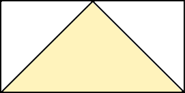 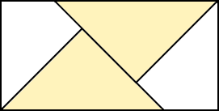 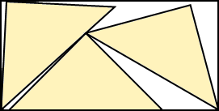 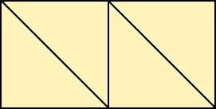 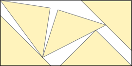 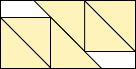 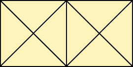 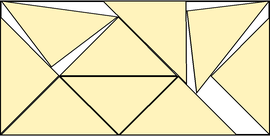 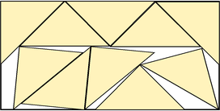 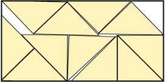 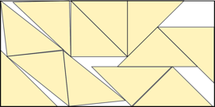 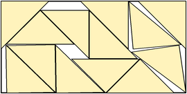 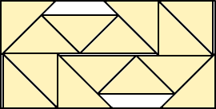 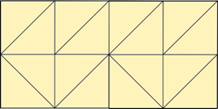 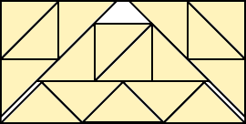 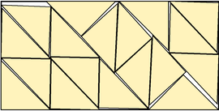
1.
s = 1/√2 = .70710+
Trivial.
2.
s = 2√2/3 = .94280+
Found by Maurizio Morandi in June 2026.
3.
s = .99900+
Found by Maurizio Morandi in June 2026.
4.
s = 1
Trivial.
5.
s = 1.30157+
Found by Jonathan Viquerat in June 2026.
6.
s = 4/3 = 1.33333+
Found by Maurizio Morandi in June 2026.
7.-8.
s = √2 = 1.41421+
Trivial.
9.
s = 1.60710+
Found by Maurizio Morandi in June 2026.
10.
s = 1 + 1/√2 = 1.70710+
Found by Maurizio Morandi in June 2026.
11.
s = 1.74955+
Found by Jonathan Viquerat in June 2026.
12.
s = 3(1+√2)/4 = 1.81066+
Found by Maurizio Morandi in June 2026.
13.
s = 1/2+√2 = 1.91421+
Found by Maurizio Morandi in June 2026.
14.
s = (7+2√2)/5 = 1.96568+
Found by Maurizio Morandi in June 2026.
15.-16.
s = 2
Trivial.
17.
s = (7+4√2)/6 = 2.10947+
Found by Maurizio Morandi in June 2026.
18.
s = 2.17527+
Found by Maurizio Morandi in June 2026.